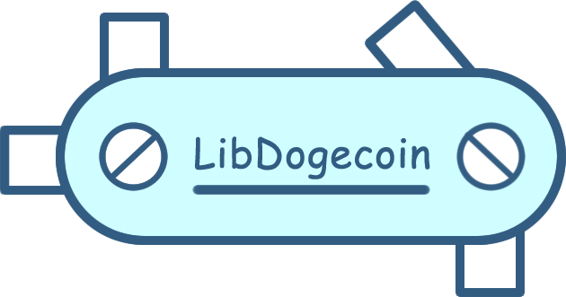

Libdogecoin, a clean C library of Dogecoin building blocks



Table of Contents
What is Libdogecoin?
Libdogecoin will be a complete implementation of the Dogecoin Protocols, as a C library (and series of bindings to popular languages) which will allow anyone to build a Dogecoin compliant product, without needing to worry about the deeper, complicated specifics of the crypto functions.
Libdogecoin is here to make crypto development simple, clean, and fun!
This will be a pure library, providing a set of callable functions to implement in external projects, but not a ‘runnable’ node facility. Although we expect building a Dogecoin Node will be a useful test and early outcome, that will live in another repository.
It is intended that connecting the bits together into an engine be done at the level above, via the networking libraries of the host language.
See the Project Roadmap for more on the planned stages of development
See the Dogecoin Trailmap for more on libdogecoin
Advantages of Libdogecoin
- No dependencies in case no p2p network client is required (only dependencies are libsecp256k1 added as git subtree and optionally (enabled by default) libunistring for mnemonics)
- The only dependency for the p2p network client is libevent (very portable)
- optimized for MCU and low mem environments
- ~full test coverage
- Best effort to to be mem leak free (manual valgrind check per supported platform)
Current features
- Generating and storing private and public keys
- ECDSA secp256k1 signing and verification (through libsecp256k1 included as git subtree)
- Generate recoverable signatures (and recover pubkey from signatures)
- BIP32 hierarchical deterministic key derivation
- Transaction generation, manipulation, signing and ser-/deserialization including P2PKH, P2SH, multisig
- Address generation
- Base58check encoding
- Native implementation of SHA256, SHA512, SHA512_HMAC, RIPEMD-160 including NIST testvectors
- Native constant time AES (+256CBC) cipher implementation including NIST testvectors
- Event based dogecoin P2P client capable of connecting to multiple nodes in a single thread (requires libevent)
Why C?
The Dogecoin Core project is written in C++, why move to C? This is a good question.
The Dogecoin Core project was inherited when Dogecoin was originally forked and makes use of some reasonable heavy C++ libraries that add complexity to the build process, as well as cognitive complexity for new developers.
The desire is to provide a simple to learn library with few external dependencies that can be built with relatively little setup by new developers. Furthermore the aim of providing wrappers for a number of higher-level languages leans strongly toward either C or RUST from a binding/support perspective, and we believe C still has significantly more support when writing bindings for a wide variety of other languages. C is better supported on embedded/lightweight platforms, with the goal of moving dogecoin beyond the realm of the PC; and actually prepares (constrains it) to be re-coded/adapted in other languages as specific OO and memory mgmt functions of C++ aren't required. Wrappers that previously lived here in this repository have been moved to their own respective projects (python and go bindings) found at @dogeorg.
Dogecoin Standard/Spec
During the process of extracting the fundamentals from the Dogecoin Core Wallet (reference implementation) we aim to document ‘how Dogecoin works’ as a suite of tests and documents we are calling the Dogecoin Standard.
See /spec
By doing this we will be able to verify that the Libdogecoin implementation of Dogecoin’s internals is accurate to the OG wallet, and thus provide a mechanism for any future Dogecoin implementations to verify compliance with the Dogecoin Network.
Code of Shibes
By contributing to this repository you agree to be a basic human being, please see CONDUCT.md
Contributing
TL;DR: Initially during the early phase of development we'll keep this basic, after the library starts to become a dependency for projects in real-world active use this will likely change and the API will become considerably more extensive.
- Express interest and get added to the libdogecoin team on GitHub and join the conversation in the Foundation discord server.
- Branch/PRs in this repository (see above point for access)
- Ensure tests pass and coverage is maintained
- Update libdogecoin.h in
/include/and example.c in/contrib/examples/ - 1 approval from another contributor required to merge to main
- Don't introduce dependencies without discussion (MIT); our aim is to have as few dependencies as possible, with the ideal (possibly unachievable) goal of having none beyond standard c libs and a compiler.
- Collaborate before you innovate! (this means, discuss what you're working on where everyone can see, before submitting a change.)
- Have fun <3
Repository Navigation
Advice on how to navigate this repository:
/.libs/where the static library lives after it has been fully built./contrib/<proj>a place for misc non-core experiments, utils, demo-nodes etc./spec/*.mda place to begin documenting the Dogecoin Standard as we go./include/dogecoin/*.hprovides header files for libdogecoin users, look here for .h./src/<feature>/*.c,*.hlook here for local .c/.h source implementing the contracts in/include./test/test suite./Makefile, license, basic readmes and build control files
The documentation has many helpful resources regarding setup and usage of Libdogecoin, along with some educational content on the specifics of Dogecoin protocols. Their contents are listed below:
address.mdFull description of dogecoin addresses and the Libdogecoin Essential Address API.getting_started.mdDetailed instructions for building, installing, and implementing the library in your project.project_roadmap.mdOur plan for the future of Libdogecoin (with pictures!).tools.mdGuidance on how to use provided helper scripts and tools likesuchandsendtx.transaction.mdFull description of dogecoin transactions and the Libdogecoin Essential Transaction API.
Quick Start
For more detailed build and installation instructions, please refer to getting_started.md
Preliminary
Before attempting to build, make sure all the necessary dependencies for your architecture are installed.
Debian/Ubuntu
sudo apt-get install autoconf automake libtool build-essential libevent-dev libunistring-dev
MacOS
xcode_select --install
sudo chown -R $(whoami) $(brew --prefix)/*
Other - Please submit a pull request to add dependencies for your system, or update these.
Building
Debian / Ubuntu
To build the full library, including the such and sendtx CLI tools, run the following autoconf commands:
./autogen.sh
./configure
make
To build the pure library without net support, add the following flags to the ./configure command:
./autogen.sh
./configure --disable-net --disable-tools
make
CMake
To build with cmake run the following from the project root directory:
mkdir build
cd build
cmake ..
cmake --build .
Integration
Using Libdogecoin in your own project is very simple! Once the library is built, you will see the resulting libdogecoin.a file in the /.libs folder. Additionally, you will want to locate the libdogecoin.h header file in the /include/dogecoin folder. Move both of these files into your project directory, or somewhere where the compiler can find them. In your source code which uses the Libdogecoin API, make sure to include this libdogecoin.h header at the top of your code.
The following instructions show how to build and integrate libdogecoin under Linux, This will vary somewhat for other operating systems; but the process itself should be roughly analogous.
In addition to the following instructions we've created an example file that contains functions stopping at version 0.1.2 which is found in /contrib/examples/example.c.
To compile that example with gcc, first build libdogecoin so the resulting .a file will be found in /.libs and execute:
gcc ./contrib/examples/example.c ./.libs/libdogecoin.a -I./include/dogecoin -L./.libs -ldogecoin -lunistring -o example
then run the example: ./example. Otherwise continue with something like the folowing:
main.c:
#include <stdio.h>
#include "libdogecoin.h"
int main() {
// your code here...
}
Once you are ready to compile, the libdogecoin.a file must be linked to your source code, along with libevent and libunistring. The resulting compilation command will looks similar to this:
gcc main.c -ldogecoin -levent -lunistring -o myprojectname
Getting Started with Libdogecoin
Download Pre-built Binaries
To use Libdogecoin directly out of the box without making any modifications to the source code, you can download the pre-made binaries from https://github.com/dogecoinfoundation/libdogecoin/releases. This is the easiest to start with for new developers, but does not enable customization of the library. In order increase control over installation, refer to the section below on manually building Libdogecoin.
Building Manually
Step 1: Install Dependencies
For Ubuntu and Debian Linux, you will need to install the following dependencies before building:
- autoconf
- automake
- libtool
- libevent-dev
- libunistring-dev
- build-essential
This can be done in the following commands using Linux CLI:
sudo apt-get update
sudo apt-get install autoconf automake libtool libevent-dev libunistring-dev build-essential
For Windows, you will need to install the following dependencies before building:
Step 2: Build Libraries
If all the necessary dependencies have been installed, you can now proceed in building the library. Using autoconf tools, run the ./autogen.sh command in terminal:
./autogen.sh
Next, you can configure the library to your liking by specifying flags on the ./configure command. (This is especially important for cross compilation as shown in the cross compilation section.)
At this step there are plenty of flags that can be specified, the two most pertinent ones being enable-tools/disable-tools and enable-net/disable-net. Both are enabled by default, but if you do not need to use the CLI tools mentioned in tools.md or are not planning to send transactions using Libdogecoin, you may want to consider disabling these flags for simplicity and speed. Here are some examples of possible configurations you can build:
./configure
./configure --disable-net --disable-tools
./configure LD_LIBRARY_PATH='path/to/additional/libraries'
./configure CFLAGS='-Ipath/to/additional/include/files'
For a complete list of all different configuration options, you can run the command ./configure --help.
Finally, once you have configured the library to your liking, it is ready to be built. This can be done with the simple make command:
make
Or, if you would like to also run our basic unit tests, you can run the command make check which will both build the library and give output showing which files are not passing tests. Note: when compiling with net enabled, this will appear to hang for a couple of seconds after test_tool(), but rest assured that it is running.
make check
Output:
make[1]: Entering directory '/home/username/libdogecoin'
make check-TESTS
make[2]: Entering directory '/home/username/libdogecoin'
PASSED - test_address()
PASSED - test_aes()
PASSED - test_base58()
PASSED - test_bip32()
...
PASSED - test_tool()
PASSED - test_net_basics_plus_download_block()
PASSED - test_protocol()
PASS: tests
=============
1 test passed
=============
make[2]: Leaving directory '/home/username/libdogecoin'
make[1]: Leaving directory '/home/username/libdogecoin'
On Windows, you will need to run the following commands in the Visual Studio Developer Command Prompt:
mkdir build
cd build
cmake ..
cmake --build .
Debug\tests.exe
Step 3: Integrate in Your Project
At this point, the library file libdogecoin.a located in the /.libs folder is now fully built and can be moved to any location on your file system. To integrate into your project, you will want to move this file by whatever means (copy-paste, drag-and-drop, mv command, etc.) to a location inside of your project where the linker can find it. If it is not directly in your project folder, you will need to specify the path by using the -L flag during compilation.
You will want to do the same with the libdogecoin.h header (located in /include/dogecoin) in order to integrate the Libdogecoin functions into your source code. Be sure to write an include statement for this file at the top of any source code which uses Libdogecoin, like the example below:
main.c:
#include <stdio.h>
#include "libdogecoin.h"
int main() {
// your code here...
}
Again, for compilation later, if libdogecoin.h is not directly next to your source code, specify the path to the header file using the -I flag.
From here, you can call the Libdogecoin API from your program as you normally would any function, as shown below. For more examples on the context in which to use these functions, please refer to address.md and transaction.md. In this particular script, the user is generating a new key pair at which to receive funds, and is constructing a transaction to send funds to this new address from an existing wallet.
main.c:
#include "libdogecoin.h"
#include <stdio.h>
int main() {
dogecoin_ecc_start();
// establish existing info (utxo is worth 2 doge)
char *oldPrivKey = "ci5prbqz7jXyFPVWKkHhPq4a9N8Dag3TpeRfuqqC2Nfr7gSqx1fy";
char *oldPubKey = "031dc1e49cfa6ae15edd6fa871a91b1f768e6f6cab06bf7a87ac0d8beb9229075b";
char *oldScriptPubKey = "76a914d8c43e6f68ca4ea1e9b93da2d1e3a95118fa4a7c88ac";
char* utxo_id = "b4455e7b7b7acb51fb6feba7a2702c42a5100f61f61abafa31851ed6ae076074";
int utxo_vout = 1;
char* amt_total = "2.0";
// generate new key pair to send to
char newPrivKey[PRIVKEYWIFLEN];
char newPubKey[P2PKHLEN];
generatePrivPubKeypair(newPrivKey, newPubKey, false);
// build and sign the transaction
int idx = start_transaction();
add_utxo(idx, utxo_id, utxo_vout);
add_output(idx, newPubKey, "0.69");
finalize_transaction(idx, newPubKey, "0.00226", amt_total, oldPubKey);
sign_transaction(idx, oldScriptPubKey, oldPrivKey);
// print result
printf("\nFinal signed transaction hex: %s\n\n", get_raw_transaction(idx));
dogecoin_ecc_stop();
}
The last step is to specify the libraries you will need to link into your project, done by using the -l flag. The libraries that are required to use Libdogecoin in your project are:
- libdogecoin (of course!)
- libevent
- libunistring
On the command line, your final compilation will look something like the command below, factoring in all of the steps previously mentioned. Note: the prefix "lib" is excluded when specifying libraries to link.
gcc main.c -L./path/to/library/file -I./path/to/header/file -ldogecoin -levent -lunistring -o myprojectname
Congratulations, you have just built an executable program that implements Libdogecoin!
Cross Compilation with Depends
There may be times when you would like to build the library for a different operating system than you are currently running. You can do this relatively easily with depends, included in the Libdogecoin repo! The available operating systems you can choose from are the following:
- arm-linux-gnueabihf
- armv7a-linux-android
- aarch64-linux-gnu
- aarch64-linux-android
- x86_64-pc-linux-gnu
- x86_64-apple-darwin
- x86_64-w64-mingw32
- x86_64-linux-android
- i686-w64-mingw32
- i686-pc-linux-gnu
The build steps for cross compilation are very similar to the native build steps listed above. Specify the desired architecture from the list above under by using the host flag, and include any necessary configuration flags on the ./configure command:
make -C depends host=<target_architecture>
./autogen.sh
./configure
make check
It is important to run make check after cross compiling to make sure that everything is running properly for your architecture. For some guidance on which configuration flags to run, you can refer to our CI test file.
Libdogecoin Address API
Table of Contents
- Libdogecoin Address API
Introduction
A Dogecoin address is the public key of an asymmetric key pair, and provides a designation on the network to hold Dogecoins on the ledger. By holding the private key for an address on the ledger, you have the ability to sign transactions to move (spend/send) the Dogecoins attributed to the address.
Dogecoin addresses can be created in a number of ways, each with benefits depending on the objective of the address owner(s). A couple of these are listed below:
Simple Addresses
These are the most common form of Dogecoin address, a single private key with a single public key (address). Most often these are what an exchange would use to retain full custody of a wallet on behalf of their users, or for a simple desktop / mobile wallet they provide a basic approach to address management.
HD Addresses
HD, or Hierarchical Deterministic addresses, unlike simple addresses are created from a seed key-phrase, usually twelve random unique words rather than a 256-bit private key. The key-phrase is then used (with the addition of a simple, incrementing number) to generate an unlimited supply of public Dogecoin addresses which the holder of the key-phrase can sign.
Seed phrases
Seed phrases, also known as mnemonic phrases, are a commonly used method to create and backup HD addresses. These phrases consist of 12 or 24 random words, generated from a 128 or 256-bit entropy source, respectively. Seed phrases can then be used to generate an HD address.
When using seed phrases to generate HD addresses, it is essential to ensure the security of the seed phrase. Seed phrases should be treated with extreme caution and must be stored safely in a secure location. There are several steps that you can take to ensure that your seed phrase remains secure:
- Do not type your seed phrase into any device connected to the internet, as it could be compromised by malware or keyloggers.
- Store your seed phrase offline in a secure and tamper-evident location, such as a hardware wallet, paper wallet or encrypted digital storage device.
- Do not share your seed phrase with anyone, as it grants access to all the funds in your wallet.
- Use a strong, unique and memorable passphrase to protect your seed phrase from unauthorized access.
When embedding libdogecoin in your project, it is important to consider the wallet type you are using. HD wallets, which use seed phrases to generate addresses, are generally considered more secure than simple wallets, which use a single private key for all addresses. Hot wallets, which are connected to the internet, are more convenient to use but are also more vulnerable to attacks. Cold wallets, which are kept offline, are more secure but may be less convenient to use for frequent transactions. You should carefully consider your security needs and choose the appropriate wallet type for your project.
Simple Address Generation Process
The first step to create a simple pay-to-public-key-hash (p2pkh) address is to generate the private key, which is a randomly generated 256-bit (32-byte) unsigned integer. This must be done within a secp256k1 context in order to generate a private key, as this context ensures the key's validity can be mathematically proven by other validators.
This random private key is then encoded into wallet import format (WIF) which makes the private key readable and easier to copy. If viewing this private key, DO NOT REVEAL IT TO ANYONE ELSE! This private key grants you the ability to spend any Dogecoin sent to any public key associated with this private key, and sharing it will compromise all funds in your wallet.
The next step in the process is deriving the public key from the private key, using the mathematical properties of the secp256k1 elliptical curve (this is done internally by Libdogecoin). This should be done within the same context that was created at the beginning of the session, because it is expensive to regenerate all the cryptographic information necessary and this extraneous computation should be avoided.
One thing to note is that this public key is NOT the same as a Dogecoin address. The final step in the address generation process is to convert the public key (in the form of seemingly random bytes) into a readable, valid Dogecoin address. The steps for achieving this are as follows:
- Pass the public key once through a SHA256 hash function.
- Pass the result of this hash into a RIPEMD-160 hash function.
- Prefix this RIPEMD-160 result with the character associated with the specified blockchain. ('D' for mainnet, 'n' for testnet)
- Double-hash the current string (prefix + RIPEMD-160 result) with SHA256 and save the result as a 32-byte checksum.
- Append the first 4 bytes of this checksum to the current string.
- Encode the current string with base58 to get the final Dogecoin p2pkh address.
You now have a valid Dogecoin address! Its validity can be checked using the verifyPrivPubKeypair() function, which assesses whether the checksum holds after the address undergoes base58 decoding. Keep in mind, the public key cannot be derived from this p2pkh address because it was passed through irreversible hash functions. However, this address can now be used to receive funds and eventually spend them using the private key generated in the beginning.
These steps can be very confusing, so Libdogecoin does all of them for you when you call generatePrivPubKeyPair(), from private key generation to public key derivation to p2pkh address conversion. The process is very similar for HD key pair generation but with a little more complexity involved in generating the raw key pair. For more information on how to call the functions that perform the process listed above, see the Essential API description below.
Essential Address API
These functions implement the core functionality of Libdogecoin for address generation and validation, and are described in depth below. You can access them through a C program, by including the libdogecoin.h header in the source code and including the libdogecoin.a library at compile time.
When using functions from either the Essential or Advanced Address API, include the -lunistring flag during the linking process. This is because the Advanced Address API uses the GNU libunistring library for Unicode string manipulation. To include the -lunistring flag during linking, simply add it to the linker command when building your project:
gcc -o example example.c -ldogecoin -lunistring
Ensure that the libunistring library is installed on your system before linking.
generatePrivPubKeypair:
int generatePrivPubKeypair(char* wif_privkey, char* p2pkh_pubkey, bool is_testnet)
This function will populate provided string variables (privkey, pubkey) with freshly generated respective private and public keys, specifically for either mainnet or testnet as specified through the network flag (is_testnet). The function returns 1 on success and 0 on failure.
C usage:
#include "libdogecoin.h"
#include <stdio.h>
int main() {
int privkeyLen = PRIVKEYWIFLEN;
int pubkeyLen = P2PKHLEN;
char privKey[privkeyLen];
char pubKey[pubkeyLen];
dogecoin_ecc_start();
generatePrivPubKeypair(privKey, pubKey, false); // generating a mainnet pair
dogecoin_ecc_stop();
printf("My private key for mainnet is: %s\n", privKey);
printf("My public key for mainnet is: %s\n", pubKey);
}
generateHDMasterPubKeypair:
int generateHDMasterPubKeypair(char* hd_privkey_master, char* p2pkh_pubkey_master, bool is_testnet)
This function will populate provided string variables (privkey, pubkey) with freshly generated respective private and public keys for a hierarchical deterministic wallet, specifically for either mainnet or testnet as specified through the network flag (is_testnet). The function returns 1 on success and 0 on failure.
C usage:
#include "libdogecoin.h"
#include <stdio.h>
int main() {
int masterPrivkeyLen = HDKEYLEN; // enough cushion
int pubkeyLen = P2PKHLEN;
char masterPrivKey[masterPrivkeyLen];
char masterPubKey[pubkeyLen];
dogecoin_ecc_start();
generateHDMasterPubKeypair(masterPrivKey, masterPubKey, false);
dogecoin_ecc_stop();
printf("My private key for mainnet is: %s\n", masterPrivKey);
printf("My public key for mainnet is: %s\n", masterPubKey);
}
generateDerivedHDPubKey:
int generateDerivedHDPubkey(const char* hd_privkey_master, char* p2pkh_pubkey)
This function takes a given HD master private key (hd_privkey_master) and loads it into the provided pointer for the resulting derived public key (p2pkh_pubkey). This private key input should come from the result of generateHDMasterPubKeypair(). The function returns 1 on success and 0 on failure.
C usage:
#include "libdogecoin.h"
#include <stdio.h>
int main() {
int masterPrivkeyLen = HDKEYLEN; // enough cushion
int pubkeyLen = P2PKHLEN;
char masterPrivKey[masterPrivkeyLen];
char masterPubKey[pubkeyLen];
char childPubKey[pubkeyLen];
dogecoin_ecc_start();
generateHDMasterPubKeypair(masterPrivKey, masterPubKey, false);
generateDerivedHDPubkey(masterPrivKey, childPubKey);
dogecoin_ecc_stop();
printf("master private key: %s\n", masterPrivKey);
printf("master public key: %s\n", masterPubKey);
printf("derived child key: %s\n", childPubKey);
}
verifyPrivPubKeypair
int verifyPrivPubKeypair(char* wif_privkey, char* p2pkh_pubkey, bool is_testnet)
This function requires a previously generated key pair (wif_privkey, p2pkh_pubkey) and the network they were generated for (is_testnet). It then validates that the given public key was indeed derived from the given private key, returning 1 if the keys are associated and 0 if they are not. This could be useful prior to signing, or in some kind of wallet recovery tool to match keys.
C usage:
#include "libdogecoin.h"
#include <stdio.h>
int main() {
int privkeyLen = PRIVKEYWIFLEN;
int pubkeyLen = P2PKHLEN;
char privKey[privkeyLen];
char pubKey[pubkeyLen];
dogecoin_ecc_start();
generatePrivPubKeypair(privKey, pubKey, false);
if (verifyPrivPubKeypair(privKey, pubKey, false)) {
printf("Keypair is valid.\n");
}
else {
printf("Keypair is invalid.\n");
}
dogecoin_ecc_stop();
}
verifyHDMasterPubKeypair
int verifyHDMasterPubKeypair(char* hd_privkey_master, char* p2pkh_pubkey_master, bool is_testnet)
This function validates that a given master private key matches a given master public key. This could be useful prior to signing, or in some kind of wallet recovery tool to match keys. This function requires a previously generated HD master key pair (hd_privkey_master, p2pkh_pubkey_master) and the network they were generated for (is_testnet). It then validates that the given public key was indeed derived from the given master private key, returning 1 if the keys are associated and 0 if they are not. This could be useful prior to signing, or in some kind of wallet recovery tool to match keys.
C usage:
#include "libdogecoin.h"
#include <stdio.h>
int main() {
int masterPrivkeyLen = HDKEYLEN; // enough cushion
int pubkeyLen = P2PKHLEN;
char masterPrivKey[masterPrivkeyLen];
char masterPubKey[pubkeyLen];
dogecoin_ecc_start();
generateHDMasterPubKeypair(masterPrivKey, masterPubKey, false);
if (verifyHDMasterPubKeypair(masterPrivKey, masterPubKey, false)) {
printf("Keypair is valid.\n");
}
else {
printf("Keypair is invalid.\n");
}
dogecoin_ecc_stop();
}
verifyP2pkhAddress
int verifyP2pkhAddress(char* p2pkh_pubkey, uint8_t len)
This function accepts an existing public key (p2pkh_pubkey) and its length in characters (len) to perform some basic validation to determine if it looks like a valid Dogecoin address. It returns 1 if the address is valid and 0 if it is not. This is useful for wallets that want to check that a recipient address looks legitimate.
C usage:
#include "libdogecoin.h"
#include <stdio.h>
int main() {
int privkeyLen = HDKEYLEN; // enough cushion
int pubkeyLen = P2PKHLEN;
char privKey[privkeyLen];
char pubKey[pubkeyLen];
dogecoin_ecc_start();
generatePrivPubKeypair(privKey, pubKey, false);
if (verifyP2pkhAddress(pubKey, strlen(pubKey))) {
printf("Address is valid.\n");
}
else {
printf("Address is invalid.\n");
}
dogecoin_ecc_stop();
}
getHDNodePrivateKeyWIFByPath
char* getHDNodePrivateKeyWIFByPath(const char* masterkey, const char* derived_path, char* outaddress, bool outprivkey)
This function derives a hierarchical deterministic child key by way of providing the extended master key, derived_path, outaddress and outprivkey. It will return the dogecoin_hdnode's private key serialized in WIF format if successful and exits if the proper arguments are not provided.
C usage:
#include "libdogecoin.h"
#include <assert.h>
#include <stdio.h>
int main() {
size_t extoutsize = 112;
char* extout = dogecoin_char_vla(extoutsize);
char* masterkey_main_ext = "dgpv51eADS3spNJh8h13wso3DdDAw3EJRqWvftZyjTNCFEG7gqV6zsZmucmJR6xZfvgfmzUthVC6LNicBeNNDQdLiqjQJjPeZnxG8uW3Q3gCA3e";
dogecoin_ecc_start();
u_assert_str_eq(getHDNodePrivateKeyWIFByPath(masterkey_main_ext, "m/44'/3'/0'/0/0", extout, true), "QNvtKnf9Qi7jCRiPNsHhvibNo6P5rSHR1zsg3MvaZVomB2J3VnAG");
u_assert_str_eq(extout, "dgpv5BeiZXttUioRMzXUhD3s2uE9F23EhAwFu9meZeY9G99YS6hJCsQ9u6PRsAG3qfVwB1T7aQTVGLsmpxMiczV1dRDgzpbUxR7utpTRmN41iV7");
dogecoin_ecc_stop();
free(extout);
}
getHDNodeAndExtKeyByPath
dogecoin_hdnode* getHDNodeAndExtKeyByPath(const char* masterkey, const char* derived_path, char* outaddress, bool outprivkey)
This function derives a hierarchical deterministic child key by way of providing the extended master key, derived_path, outaddress and outprivkey. The masterkey can be either a private or public key, but if it is a public key, the outprivkey flag must be set to false and the derived_path must be a public derivation path. It will return the dogecoin_hdnode if successful and exits if the proper arguments are not provided.
C usage:
#include "libdogecoin.h"
#include <assert.h>
#include <stdio.h>
int main() {
size_t extoutsize = 112;
char* extout = dogecoin_char_vla(extoutsize);
char* masterkey_main_ext = "dgpv51eADS3spNJh8h13wso3DdDAw3EJRqWvftZyjTNCFEG7gqV6zsZmucmJR6xZfvgfmzUthVC6LNicBeNNDQdLiqjQJjPeZnxG8uW3Q3gCA3e";
dogecoin_ecc_start();
dogecoin_hdnode* hdnode = getHDNodeAndExtKeyByPath(masterkey_main_ext, "m/44'/3'/0'/0/0", extout, true);
u_assert_str_eq(utils_uint8_to_hex(hdnode->private_key, sizeof hdnode->private_key), "09648faa2fa89d84c7eb3c622e06ed2c1c67df223bc85ee206b30178deea7927");
dogecoin_privkey_encode_wif((const dogecoin_key*)hdnode->private_key, &dogecoin_chainparams_main, privkeywif_main, &wiflen);
u_assert_str_eq(privkeywif_main, "QNvtKnf9Qi7jCRiPNsHhvibNo6P5rSHR1zsg3MvaZVomB2J3VnAG");
u_assert_str_eq(extout, "dgpv5BeiZXttUioRMzXUhD3s2uE9F23EhAwFu9meZeY9G99YS6hJCsQ9u6PRsAG3qfVwB1T7aQTVGLsmpxMiczV1dRDgzpbUxR7utpTRmN41iV7");
dogecoin_ecc_stop();
dogecoin_hdnode_free(hdnode);
free(extout);
}
#include "libdogecoin.h"
#include <assert.h>
#include <stdio.h>
int main() {
char masterkey[HDKEYLEN] = {0};
char master_public_key[HDKEYLEN] = {0};
char extkeypath[KEYPATHMAXLEN] = "m/0/0/0/0/0";
char extpubkey[HDKEYLEN] = {0};
dogecoin_ecc_start();
// Generate a master key pair from the seed, and then get the master public key
getHDRootKeyFromSeed(utils_hex_to_uint8("5eb00bbddcf069084889a8ab9155568165f5c453ccb85e70811aaed6f6da5fc19a5ac40b389cd370d086206dec8aa6c43daea6690f20ad3d8d48b2d2ce9e38e4"), MAX_SEED_SIZE, false, masterkey);
getHDPubKey(masterkey, false, master_public_key);
// Derive an extended normal (non-hardened) public key from the master public key
getHDNodeAndExtKeyByPath(master_public_key, extkeypath, extpubkey, false);
dogecoin_ecc_stop();
printf("%s\n", extpubkey);
}
getDerivedHDAddress
int getDerivedHDAddress(const char* masterkey, uint32_t account, bool ischange, uint32_t addressindex, char* outaddress, bool outprivkey)
This function derives a hierarchical deterministic address by way of providing the extended master key, account, ischange and addressindex. It will return 1 if the function is successful and 0 if not.
C usage:
#include "libdogecoin.h"
#include <assert.h>
#include <stdio.h>
int main() {
size_t extoutsize = 112;
char* extout = dogecoin_char_vla(extoutsize);
char* masterkey_main_ext = "dgpv51eADS3spNJh8h13wso3DdDAw3EJRqWvftZyjTNCFEG7gqV6zsZmucmJR6xZfvgfmzUthVC6LNicBeNNDQdLiqjQJjPeZnxG8uW3Q3gCA3e";
dogecoin_ecc_start();
int res = getDerivedHDAddress(masterkey_main_ext, 0, false, 0, extout, true);
u_assert_int_eq(res, true);
u_assert_str_eq(extout, "dgpv5BeiZXttUioRMzXUhD3s2uE9F23EhAwFu9meZeY9G99YS6hJCsQ9u6PRsAG3qfVwB1T7aQTVGLsmpxMiczV1dRDgzpbUxR7utpTRmN41iV7");
dogecoin_ecc_stop();
free(extout);
}
getDerivedHDAddressByPath
int getDerivedHDAddressByPath(const char* masterkey, const char* derived_path, char* outaddress, bool outprivkey)
This function derives an extended HD address by custom path in string format (derived_path). It returns 1 if the address is valid and 0 if it is not.
C usage:
#include "libdogecoin.h"
#include <assert.h>
#include <stdio.h>
int main() {
size_t extoutsize = 112;
char* extout = dogecoin_char_vla(extoutsize);
char* masterkey_main_ext = "dgpv51eADS3spNJh8h13wso3DdDAw3EJRqWvftZyjTNCFEG7gqV6zsZmucmJR6xZfvgfmzUthVC6LNicBeNNDQdLiqjQJjPeZnxG8uW3Q3gCA3e";
dogecoin_ecc_start();
res = getDerivedHDAddressByPath(masterkey_main_ext, "m/44'/3'/0'/0/0", extout, true);
u_assert_int_eq(res, true);
u_assert_str_eq(extout, "dgpv5BeiZXttUioRMzXUhD3s2uE9F23EhAwFu9meZeY9G99YS6hJCsQ9u6PRsAG3qfVwB1T7aQTVGLsmpxMiczV1dRDgzpbUxR7utpTRmN41iV7");
dogecoin_ecc_stop();
free(extout);
}
Advanced Address API
These functions implement advanced functionality of Libdogecoin for address generation and validation, and are described in depth below. You can access them through a C program, by including the libdogecoin.h header in the source code and including the libdogecoin.a library at compile time.
generateRandomEnglishMnemonic
int generateRandomEnglishMnemonic(const ENTROPY_SIZE size, MNEMONIC mnemonic);
This function generates a random English mnemonic phrase (seed phrase). The function returns 0 on success and -1 on failure.
C usage:
#include "libdogecoin.h"
#include <stdio.h>
int main () {
MNEMONIC seed_phrase;
dogecoin_ecc_start();
generateRandomEnglishMnemonic("256", seed_phrase);
dogecoin_ecc_stop();
printf("%s\n", seed_phrase);
}
C++ usage:
extern "C" {
#include "libdogecoin.h"
}
#include <iostream>
using namespace std;
int main () {
MNEMONIC seed_phrase;
dogecoin_ecc_start();
generateRandomEnglishMnemonic("256", seed_phrase);
dogecoin_ecc_stop();
cout << seed_phrase << endl;
}
generateRandomEnglishMnemonicTPM
dogecoin_bool generateRandomEnglishMnemonicTPM(MNEMONIC mnemonic, const int file_num, const dogecoin_bool overwrite);
This function generates a random English mnemonic using a TPM (Trusted Platform Module). It stores the generated mnemonic in the provided mnemonic buffer. The file_num parameter specifies the encrypted storage file number, and the overwrite parameter indicates whether to overwrite an existing mnemonic in the encrypted storage. The function returns TRUE on success and FALSE on failure.
C usage:
#include "libdogecoin.h"
int main() {
MNEMONIC mnemonic;
int file_num = 0; // Specify the TPM storage file number
dogecoin_bool overwrite = TRUE; // Set to TRUE to overwrite existing mnemonic
if (generateRandomEnglishMnemonicTPM(mnemonic, file_num, overwrite)) {
printf("Generated mnemonic: %s\n", mnemonic);
} else {
printf("Error generating mnemonic.\n");
return -1;
}
}
getDerivedHDAddressFromMnemonic
int getDerivedHDAddressFromMnemonic(const uint32_t account, const uint32_t index, const CHANGE_LEVEL change_level, const MNEMONIC mnemonic, const PASS pass, char* p2pkh_pubkey, const bool is_testnet);
This function generates a new dogecoin address from a mnemonic and a slip44 key path. The function returns 0 on success and -1 on failure.
C usage:
#include "libdogecoin.h"
#include <stdio.h>
int main () {
int addressLen = P2PKHLEN;
MNEMONIC seed_phrase;
char address [addressLen];
dogecoin_ecc_start();
generateRandomEnglishMnemonic("256", seed_phrase);
getDerivedHDAddressFromMnemonic(0, 0, "0", seed_phrase, NULL, address, false);
dogecoin_ecc_stop();
printf("%s\n", seed_phrase);
printf("%s\n", address);
}
C++ usage:
extern "C" {
#include "libdogecoin.h"
}
#include <iostream>
using namespace std;
int main () {
int addressLen = P2PKHLEN;
MNEMONIC seed_phrase;
char address [addressLen];
dogecoin_ecc_start();
generateRandomEnglishMnemonic("256", seed_phrase);
getDerivedHDAddressFromMnemonic(0, 0, "0", seed_phrase, NULL, address, false);
dogecoin_ecc_stop();
cout << seed_phrase << endl;
cout << address << endl;
}
getDerivedHDAddressFromEncryptedSeed
int getDerivedHDAddressFromEncryptedSeed(const uint32_t account, const uint32_t index, const CHANGE_LEVEL change_level, char* p2pkh_pubkey, const dogecoin_bool is_testnet, const int file_num);
This function generates a new Dogecoin address from an encrypted seed and a slip44 key path. The function returns 0 on success and -1 on failure.
C usage:
#include "libdogecoin.h"
#include <stdio.h>
int main() {
int addressLen = P2PKHLEN;
char derived_address[addressLen];
if (getDerivedHDAddressFromEncryptedSeed(0, 0, BIP44_CHANGE_EXTERNAL, derived_address, false, TEST_FILE) == 0) {
printf("Derived address: %s\n", derived_address);
} else {
printf("Error occurred.\n");
return -1;
}
}
getDerivedHDAddressFromEncryptedMnemonic
int getDerivedHDAddressFromEncryptedMnemonic(const uint32_t account, const uint32_t index, const CHANGE_LEVEL change_level, const PASS pass, char* p2pkh_pubkey, const bool is_testnet, const int file_num);
This function generates a new Dogecoin address from an encrypted mnemonic and a slip44 key path. The function returns 0 on success and -1 on failure.
C usage:
#include "libdogecoin.h"
#include <stdio.h>
int main() {
int addressLen = P2PKHLEN;
char derived_address[addressLen];
if (getDerivedHDAddressFromEncryptedMnemonic(0, 0, BIP44_CHANGE_EXTERNAL, NULL, derived_address, false, TEST_FILE) == 0) {
printf("Derived address: %s\n", derived_address);
} else {
printf("Error occurred.\n");
return -1;
}
}
getDerivedHDAddressFromEncryptedHDNode
int getDerivedHDAddressFromEncryptedHDNode(const uint32_t account, const uint32_t index, const CHANGE_LEVEL change_level, char* p2pkh_pubkey, const bool is_testnet, const int file_num);
This function generates a new Dogecoin address from an encrypted HD node and a slip44 key path. The function returns 0 on success and -1 on failure.
C usage:
#include "libdogecoin.h"
#include <stdio.h>
int main() {
int addressLen = P2PKHLEN;
char derived_address[addressLen];
if (getDerivedHDAddressFromEncryptedHDNode(0, 0, BIP44_CHANGE_EXTERNAL, derived_address, false, TEST_FILE) == 0) {
printf("Derived address: %s\n", derived_address);
} else {
printf("Error occurred.\n");
return -1;
}
}
Libdogecoin Elliptic Curve Key API
Table of Contents
Abstract
This document explains the basic elliptic curve key API within libdogecoin.
Specification
Cited from https://en.bitcoin.it/wiki/Elliptic_Curve_Digital_Signature_Algorithm
Background on ECDSA Signatures
Elliptic Curve Digital Signature Algorithm or ECDSA is a cryptographic algorithm used by Dogecoin to ensure that funds can only be spent by their rightful owners. It is dependent on the curve order and hash function used. For dogecoin these are Secp256k1 and SHA256(SHA256()) respectively.
A few concepts related to ECDSA:
private key: A secret number, known only to the person that generated it. A private key is essentially a randomly generated number. In Dogecoin, someone with the private key that corresponds to funds on the blockchain can spend the funds. In Dogecoin, a private key is a single unsigned 256 bit integer (32 bytes).public key: A number that corresponds to a private key, but does not need to be kept secret. A public key can be calculated from a private key, but not vice versa. A public key can be used to determine if a signature is genuine (in other words, produced with the proper key) without requiring the private key to be divulged. In Dogecoin, public keys are either compressed or uncompressed. Compressed public keys are 33 bytes, consisting of a prefix either 0x02 or 0x03, and a 256-bit integer called x. The older uncompressed keys are 65 bytes, consisting of constant prefix (0x04), followed by two 256-bit integers called x and y (2 * 32 bytes). The prefix of a compressed key allows for the y value to be derived from the x value.signature: A number that proves that a signing operation took place. A signature is mathematically generated from a hash of something to be signed, plus a private key. The signature itself is two numbers known as r and s. With the public key, a mathematical algorithm can be used on the signature to determine that it was originally produced from the hash and the private key, without needing to know the private key. Resulting signatures are either 73, 72, or 71 bytes long (with approximate probabilities of 25%, 50%, and 25%, respectively--although sizes even smaller than that are possible with exponentially decreasing probability).
Primitives
The ECDSA signing and verification algorithms make use of a few fundamental variables which are used to obtain a signature and the reverse process of getting a message from a signature.
rands: These numbers uniquely represent the signature.z: The hash of the message we want to sign. Normally we are required to use the left-most N bits of the message hash, whereNis the length of the hash function used, however, this rule does not apply to dogecoin signatures because the length of the hash function used, SHA256, equals the bit length of the secp256k1 curve (256) so no truncation is necessary.k: A cryptographicly secure random number which is used as a nonce to calculate therandsvalues.dAandQA: These are the private key number and public key point respectively, used to sign and verify the message. Wallets can derive a copy of these when give an address contained inside the wallet.
Verification Algorithm
The verification algorithm ensures that the signature pair r and s, QA and z are all consistent.
- Verify that both
randsare between1andn-1. - Compute
u1 = z*s-1 mod nandu2 = r*s-1 mod n. - Compute
(x, y) = u1*G + u2*QAand ensure it is not equal to the point at infinity. The point at infinity is a special point that results when you add two points whose result would otherwise not lie on the curve, such as two points with the sameXvalue but invertedYvalues. - If
r = x mod nthen the signature is valid. Otherwise, or if any of the checks fail, then the signature is invalid.
Basic Elliptic Curve Key API
eckey:
typedef struct eckey {
int idx;
dogecoin_key private_key;
char private_key_wif[PRIVKEYWIFLEN];
dogecoin_pubkey public_key;
char public_key_hex[PUBKEYHEXLEN];
char address[P2PKHLEN];
UT_hash_handle hh;
} eckey;
keys:
static eckey *keys = NULL;
This is an empty collection of key structures and meant for internal consumption.
new_eckey:
eckey* new_eckey(dogecoin_bool is_testnet) {
eckey* key = (struct eckey*)dogecoin_calloc(1, sizeof *key);
dogecoin_privkey_init(&key->private_key);
assert(dogecoin_privkey_is_valid(&key->private_key) == 0);
dogecoin_privkey_gen(&key->private_key);
assert(dogecoin_privkey_is_valid(&key->private_key)==1);
dogecoin_pubkey_init(&key->public_key);
dogecoin_pubkey_from_key(&key->private_key, &key->public_key);
assert(dogecoin_pubkey_is_valid(&key->public_key) == 1);
strcpy(key->public_key_hex, utils_uint8_to_hex((const uint8_t *)&key->public_key, 33));
uint8_t pkeybase58c[34];
const dogecoin_chainparams* chain = is_testnet ? &dogecoin_chainparams_test : &dogecoin_chainparams_main;
pkeybase58c[0] = chain->b58prefix_secret_address;
pkeybase58c[33] = 1; /* always use compressed keys */
memcpy_safe(&pkeybase58c[1], &key->private_key, DOGECOIN_ECKEY_PKEY_LENGTH);
assert(dogecoin_base58_encode_check(pkeybase58c, sizeof(pkeybase58c), key->private_key_wif, sizeof(key->private_key_wif)) != 0);
if (!dogecoin_pubkey_getaddr_p2pkh(&key->public_key, chain, (char*)&key->address)) return false;
key->idx = HASH_COUNT(keys) + 1;
return key;
}
This function instantiates a new working key, but does not add it to the hash table.
C usage:
eckey* key = new_eckey(false);
new_eckey_from_privkey:
eckey* new_eckey_from_privkey(char* private_key) {
eckey* key = (struct eckey*)dogecoin_calloc(1, sizeof *key);
dogecoin_privkey_init(&key->private_key);
const dogecoin_chainparams* chain = chain_from_b58_prefix(private_key);
if (!dogecoin_privkey_decode_wif(private_key, chain, &key->private_key)) return false;
assert(dogecoin_privkey_is_valid(&key->private_key)==1);
dogecoin_pubkey_init(&key->public_key);
dogecoin_pubkey_from_key(&key->private_key, &key->public_key);
assert(dogecoin_pubkey_is_valid(&key->public_key) == 1);
strcpy(key->public_key_hex, utils_uint8_to_hex((const uint8_t *)&key->public_key, 33));
uint8_t pkeybase58c[34];
pkeybase58c[0] = chain->b58prefix_secret_address;
pkeybase58c[33] = 1; /* always use compressed keys */
memcpy_safe(&pkeybase58c[1], &key->private_key, DOGECOIN_ECKEY_PKEY_LENGTH);
assert(dogecoin_base58_encode_check(pkeybase58c, sizeof(pkeybase58c), key->private_key_wif, sizeof(key->private_key_wif)) != 0);
if (!dogecoin_pubkey_getaddr_p2pkh(&key->public_key, chain, (char*)&key->address)) return false;
key->idx = HASH_COUNT(keys) + 1;
return key;
}
This function instantiates a new working key from a private_key in WIF format, but does not add it to the hash table.
C usage:
char* privkey = "QUtnMFjt3JFk1NfeMe6Dj5u4p25DHZA54FsvEFAiQxcNP4bZkPu2";
eckey* key = new_eckey_from_privkey(privkey);
...
dogecoin_free(key);
add_eckey:
void add_eckey(eckey *key) {
eckey* key_old;
HASH_FIND_INT(keys, &key->idx, key_old);
if (key_old == NULL) {
HASH_ADD_INT(keys, idx, key);
} else {
HASH_REPLACE_INT(keys, idx, key, key_old);
}
dogecoin_free(key_old);
}
This function takes a pointer to an existing working eckey object and adds it to the hash table.
C usage:
eckey* key = new_eckey(false);
add_eckey(key);
start_key:
int start_key(dogecoin_bool is_testnet) {
eckey* key = new_eckey(is_testnet);
int index = key->idx;
add_eckey(key);
return index;
}
This function creates a new eckey, places it in the hash table, and returns the index of the new eckey, starting from 1 and incrementing each subsequent call.
C usage:
int key_id = start_key(false);
find_eckey:
eckey* find_eckey(int idx) {
eckey* key;
HASH_FIND_INT(keys, &idx, key);
return key;
}
This function takes an index and returns the working eckey associated with that index in the hash table.
C usage:
...
int key_id = start_key(false);
eckey* key = find_eckey(key_id);
...
remove_eckey:
void remove_eckey(eckey* key) {
HASH_DEL(keys, key); /* delete it (keys advances to next) */
dogecoin_privkey_cleanse(&key->private_key);
dogecoin_pubkey_cleanse(&key->public_key);
dogecoin_key_free(key);
}
This function removes the specified working eckey from the hash table and frees the eckey in memory.
C usage:
int key_id = start_key(false);
eckey* key = find_eckey(key_id);
remove_eckey(key)
dogecoin_key_free:
void dogecoin_key_free(eckey* eckey)
{
dogecoin_free(eckey);
}
This function frees the memory allocated for an eckey.
C usage:
...
dogecoin_key_free(key);
...
Libdogecoin Signing API
Table of Contents
Abstract
This document describes the process of message signing within libdogecoin. It aims to meet the standards defined in BIP-137 although the implementation is only applicable to P2PKH addresses.
Basic Signing API
sign_message:
char* sign_message(char* privkey, char* msg) {
if (!privkey || !msg) return false;
uint256 message_bytes;
hash_message(msg, message_bytes);
size_t compact_signature_length = 65;
unsigned char* compact_signature = dogecoin_uchar_vla(compact_signature_length);
dogecoin_key key;
dogecoin_pubkey pubkey;
if (!init_keypair(privkey, &key, &pubkey)) return false;
int recid = -1;
if (!dogecoin_key_sign_hash_compact_recoverable_fcomp(&key, message_bytes, compact_signature, &compact_signature_length, &recid)) return false;
if (!dogecoin_key_recover_pubkey((const unsigned char*)compact_signature, message_bytes, recid, &pubkey)) return false;
char p2pkh_address[P2PKHLEN];
if (!dogecoin_pubkey_getaddr_p2pkh(&pubkey, &dogecoin_chainparams_main, p2pkh_address)) return false;
unsigned char* base64_encoded_output = dogecoin_uchar_vla(1+(sizeof(char)*base64_encoded_size(compact_signature_length)));
base64_encode((unsigned char*)compact_signature, compact_signature_length, base64_encoded_output);
dogecoin_free(compact_signature);
dogecoin_privkey_cleanse(&key);
dogecoin_pubkey_cleanse(&pubkey);
return (char*)base64_encoded_output;
}
This function signs a message with a private key.
C usage:
char* sig = sign_message("QUtnMFjt3JFk1NfeMe6Dj5u4p25DHZA54FsvEFAiQxcNP4bZkPu2", "This is just a test message");
verify_message:
int verify_message(char* sig, char* msg, char* address) {
if (!(sig || msg || address)) return false;
uint256 message_bytes;
hash_message(msg, message_bytes);
size_t encoded_length = strlen((const char*)sig);
unsigned char* decoded_signature = dogecoin_uchar_vla(base64_decoded_size(encoded_length+1)+1);
base64_decode((unsigned char*)sig, encoded_length, decoded_signature);
dogecoin_pubkey pub_key;
dogecoin_pubkey_init(&pub_key);
pub_key.compressed = false;
int header = decoded_signature[0] & 0xFF;
if (header < 27 || header > 42) return false;
if (header >= 31) {
pub_key.compressed = true;
header -= 4;
}
int recid = header - 27;
if (!dogecoin_key_recover_pubkey((const unsigned char*)decoded_signature, message_bytes, recid, &pub_key)) return false;
if (!dogecoin_pubkey_verify_sigcmp(&pub_key, message_bytes, decoded_signature)) return false;
char p2pkh_address[P2PKHLEN];
const dogecoin_chainparams* chain = chain_from_b58_prefix(address);
if (!dogecoin_pubkey_getaddr_p2pkh(&pub_key, chain, p2pkh_address)) return false;
dogecoin_free(decoded_signature);
dogecoin_pubkey_cleanse(&pub_key);
return strcmp(p2pkh_address, address)==0;
}
This function verifies a signed message using a P2PKH address.
C usage:
char* address = "DA8aeVkgQWwo78y3VCXtLqoWe8uWRoFuc1";
int ret = verify_message(sig, msg, address);
if (!ret) {
return false;
}
Using Libdogecoin Tools
Overview
If you are looking to just explore the functionality of Libdogecoin without building a complicated project yourself, look no further than the CLI tools provided in this repo. The first tool, such, is an interactive CLI application that allows you to perform all Essential address and transaction operations with prompts to guide you through the process. The second tool, sendtx, handles the process of broadcasting a transaction built using Libdogecoin to eventually push it onto the blockchain.
This document goes over the usage of these tools along with examples of how to use them.
The such Tool
As stated above, the such tool can be used to perform all Libdogecoin address and transaction functions, and even more. It can generate different types of public and private keys, derive and convert keys, and fully build and sign transactions.
Usage
The such tool can be used by simply running the command ./such in the top level of the Libdogecoin directory, always followed by a -c flag that denotes the desired such command to run. The options for this command are below:
- generate_private_key
- generate_public_key
- p2pkh
- bip32_extended_master_key
- derive_child_keys
- generate_mnemonic
- list_encryption_keys_in_tpm
- decrypt_master_key
- decrypt_mnemonic
- mnemonic_to_key
- mnemonic_to_addresses
- print_keys
- sign
- comp2der
- bip32maintotest
- signmessage
- verify_message
- transaction
So an example run of such could be something like this:
./such -c generate_private_key
Most of these commands require a flag following them to denote things like existing keys, transaction hex strings, and more:
| Flag | Name | Required Arg? | Usage |
|---|---|---|---|
| -p, --privkey | private_key | yes | generate_public_key -p <private_key> |
| -k, --pubkey | public_key | yes | p2pkh -k <public_key> |
| -m, --derived_path | derived_path | yes | derive_child_key -p <extended_private_key> -m <derived_path> |
| -e, --entropy | hex_entropy | yes | generate_mnemonic -e <hex_entropy> |
| -n, --mnemonic | seed_phrase | yes | mnemonic_to_key or mnemonic_to_addresses -n <seed_phrase> |
| -a, --pass_phrase | pass_phrase | yes | mnemonic_to_key or mnemonic_to_addresses -n <seed_phrase> -a <pass_phrase> |
| -o, --account_int | account_int | yes | mnemonic_to_key or mnemonic_to_addresses -n <seed_phrase> -o <account_int> |
| -g, --change_level | change_level | yes | mnemonic_to_key or mnemonic_to_addresses -n <seed_phrase> -g <change_level> |
| -i, --address_index | address_index | yes | mnemonic_to_key or mnemonic_to_addresses -n <seed_phrase> -i <address_index> |
| -y, --encrypted_file | file_num | yes | generate_mnemonic, bip32_extended_master_key, decrypt_master_key, decrypt_mnemonic, mnemonic_to_key or mnemonic_to_addresses -y <file_num> |
| -w, --overwrite | overwrite | no | generate_mnemonic or bip32_extended_master_key -w |
| -b, --silent | silent | no | generate_mnemonic or bip32_extended_master_key -b |
| -j, --use_tpm | use_tpm | no | generate_mnemonic, bip32_extended_master_key, decrypt_master_key, decrypt_mnemonic, mnemonic_to_key or mnemonic_to_addresses -j |
| -t, --testnet | designate_testnet | no | generate_private_key -t |
| -s | script_hex | yes | comp2der -s <compact_signature> |
| -x | transaction_hex | yes | sign -x <transaction_hex> -s <pubkey_script> -i <index_of_utxo_to_sign> -h <sig_hash_type> |
| -i | input_index | yes | see above |
| -h | sighash_type | yes | see above |
Below is a list of all the commands and the flags that they require. As a reminder, any command that includes the -t flag will set the default chain used in internal calculations to testnet rather than mainnet. Also included are descriptions of what each function does.
| Command | Required flags | Optional flags | Description |
|---|---|---|---|
| generate_private_key | None | -t | Generates a private key from a secp256k1 context for either mainnet or testnet. |
| generate_public_key | -p | -t | Generates a public key derived from the private key specified. Include the testnet flag if it was generated from testnet. |
| p2pkh | -k | -t | Generates a p2pkh address derived from the public key specified. Include the testnet flag if it was generated from testnet. |
| bip32_extended_master_key | None | -t | Generate an extended master private key from a secp256k1 context for either mainnet or testnet. |
| bip32maintotest | -p | None | Convert a mainnet private key into an equivalent testnet key. |
| derive_child_keys | -p, -m | -t | Generates a child key derived from the specified private key using the specified derivation path. |
| generate_mnemonic | None | -e, -y, -w, -b | Generates a 24-word english seed phrase randomly or from optional hex entropy. |
| list_encryption_keys_in_tpm | None | None | List the encryption keys in the TPM. |
| decrypt_master_key | -y | -j | Decrypt the master key with the TPM or SW. |
| decrypt_mnemonic | -y | -j | Decrypt the mnemonic with the TPM or SW. |
| mnemonic_to_key | -n | -a, -y, -o, g, -i, -t | Generates a private key from a seed phrase with a default path or specified account, change level and index for either mainnet or testnet. |
| mnemonic_to_addresses | -n | -a, -y, -o, g, -i, -t | Generates an address from a seed phrase with a default path or specified account, change level and index for either mainnet or testnet. |
| print_keys | -p | -t | Print all keys associated with the provided private key. |
| sign | -x, -s, -i, -h, -p | -t | See the definition of sign_raw_transaction in the Transaction API. |
| comp2der | -s | None | Convert a compact signature to a DER signature. |
| signmessage | -x, -p | None | Sign a message and output a base64 encoded signature and address. |
| verify_message | -x, -s, -k | None | Verify a message by public key recovery of base64 decoded signature and comparison of addresses. |
| transaction | None | None | Start the interactive transaction app. Usage instructions below. |
Lastly, to display the version of such, simply run the following command, which overrides any previous ones specified:
./such -v
Examples
Below are some examples on how to use the such tool in practice.
Generate a new private key WIF and hex encoded:
./such -c generate_private_key
> privatekey WIF: QSPDnjzvrSPAeiM7N2jCkzv2dqsi7fxoHipgpPfz2zdE3ZpYp74j
> privatekey HEX: 7073fa30281cf89195dca333134368d539e7abad712abb532c9eaf5f3666d9d1
Generate the public key, p2pkh, and p2sh-p2pkh address from a WIF encoded private key
./such -c generate_public_key -p QSPDnjzvrSPAeiM7N2jCkzv2dqsi7fxoHipgpPfz2zdE3ZpYp74j
> pubkey: 02cf2c99c2db4b3d72d4289aa23bdaf5f3ccf4867ec8e5f8223ea716a7a3de10bc
> p2pkh address: D62RKK6AGkzX6fM8RzoVM8fjPx2nzrdvKU
Generate the P2PKH address from a hex encoded compact public key
./such -c generate_public_key -pubkey 02cf2c99c2db4b3d72d4289aa23bdaf5f3ccf4867ec8e5f8223ea716a7a3de10bc
> p2pkh address: D62RKK6AGkzX6fM8RzoVM8fjPx2nzrdvKU
Generate new BIP32 master key
./such -c bip32_extended_master_key
> masterkey: dgpv51eADS3spNJh9qLpW8S7B7uZmusTpNE85NgXsYD7eGuVhebMDfEsj6fNR6DHgpSBCmYdAvw9YRSqRWnFxtYn1bM8AdNipwdi9dDXFCY8vkY
Print HD node
./such -c print_keys -privkey dgpv51eADS3spNJh9qLpW8S7B7uZmusTpNE85NgXsYD7eGuVhebMDfEsj6fNR6DHgpSBCmYdAvw9YRSqRWnFxtYn1bM8AdNipwdi9dDXFCY8vkY
> ext key: dgpv51eADS3spNJh9qLpW8S7B7uZmusTpNE85NgXsYD7eGuVhebMDfEsj6fNR6DHgpSBCmYdAvw9YRSqRWnFxtYn1bM8AdNipwdi9dDXFCY8vkY
> extended pubkey: dgub8kXBZ7ymNWy2SgzyYN45HyTAEUF6eVFqMyTk2ec6SPxWFhi3dRneNQ51zJadLERvA1ns9uvMGKM9wYKTSnCP9QrSPJMCKjdfSv4qmT3PkP2
> pubkey hex: 025368ca428b4c4e0c48631c5f8510d704858a52c7264d4ba74f34b2bcee374220
> privatekey WIF: QTtXPXYWc4G6WuA6qNRYeQ3TAdsBUUqrLwN1eWVFEvfHdd8M1ed5
> depth: 0
> child index: 0
> p2pkh address: D79Q3spkucaM2DvLxUZjgV1X4cQcWDLuyt
Derive child key (second child key at level 1 in this case)
./such -c derive_child_keys -m m/1h -privkey dgpv51eADS3spNJh9qLpW8S7B7uZmusTpNE85NgXsYD7eGuVhebMDfEsj6fNR6DHgpSBCmYdAvw9YRSqRWnFxtYn1bM8AdNipwdi9dDXFCY8vkY
> ext key: dgpv53gfwGVYiKVgf3hybqGjXuxrW2s2iCArhBURxAWaFszfqfP6wc23KFVyCuGj4fGzAX6oC8QmvhvkWz18v4VcdhzYCxoTR3XQizrVtjMwQHS
> extended pubkey: dgub8nZhGxRSGUA1wuN8e4themWSxbEfYKCZynFe7GuZ413gPiVoMNZoxYucn8DQ5doeqt1cmZnxZ4Ms9SdsraiSbUkZSYbx1GzpGbrAqmFdSSL
> pubkey hex: 023973b755fdaf5b2b7b20ac134c936ec7882b1ce0a3a75857fc490c12cdf4fb4f
> privatekey WIF: QQUwLsFpWWXsHFLCxjvBMn8Qd4Pgqji5QUXz6zN8vkiKMPvv7mpZ
> depth: 1
> child index: -2147483647
> p2pkh address: DFqonEEA56VE8zEGvhXNgjiPT3PaPFNQQu
Generate a random BIP39 seed phrase
See "Seed phrases" in address.md, for additional guidance
./such -c generate_mnemonic
> they nuclear observe moral twenty gym hedgehog damage reveal syrup negative beach best silk alone feel vapor deposit belt host purity run clever deer
Generate a HD master key from the seed phrase for a given account (2), change level (1, internal) and index (0) for testnet
./such -c mnemonic_to_key -n "they nuclear observe moral twenty gym hedgehog damage reveal syrup negative beach best silk alone feel vapor deposit belt host purity run clever deer" -o 2 -g 1 -i 0 -t
> keypath: m/44'/1'/2'/1/0
> private key (wif): cniAjMkD7HpzQKw67ByNsyzqMF8MEJo2y4viH2WEZRXoKHNih1sH
Generate an HD address from the seed phrase for a given account (2), change level (1, internal) and index (0) for testnet
./such -c mnemonic_to_addresses -n "they nuclear observe moral twenty gym hedgehog damage reveal syrup negative beach best silk alone feel vapor deposit belt host purity run clever deer" -o 2 -g 1 -i 0 -t
> Address: nW7ndt4HZh8XwLYN6v6N2S4mZCbpZPuFxh
Generate a BIP39 seed phrase from hex entropy
./such -c generate_mnemonic -e "FFFFFFFFFFFFFFFFFFFFFFFFFFFFFFFFFFFFFFFFFFFFFFFFFFFFFFFFFFFFFFFF"
> zoo zoo zoo zoo zoo zoo zoo zoo zoo zoo zoo zoo zoo zoo zoo zoo zoo zoo zoo zoo zoo zoo zoo vote
Geneate an HD address from the seed phrase and default path (m/44'/3'/0'/0/0) for mainnet
./such -c mnemonic_to_addresses -n "zoo zoo zoo zoo zoo zoo zoo zoo zoo zoo zoo zoo zoo zoo zoo zoo zoo zoo zoo zoo zoo zoo zoo vote"
> Address: DTdKu8YgcxoXyjFCDtCeKimaZzsK27rcwT
Sign an arbitrary message
./such -c signmessage -x bleh -p QWCcckTzUBiY1g3GFixihAscwHAKXeXY76v7Gcxhp3HUEAcBv33i
message: bleh
content: ICrbftD0KamyaB68IoXbeke3w4CpcIvv+Q4pncBNpMk8fF5+xsR9H9gqmfM0JrjlfzZZA3E8AJ0Nug1KWeoVw3g=
address: D8mQ2sKYpLbFCQLhGeHCPBmkLJRi6kRoSg
Verify an arbitrary message
./such -c verifymessage -x bleh -s ICrbftD0KamyaB68IoXbeke3w4CpcIvv+Q4pncBNpMk8fF5+xsR9H9gqmfM0JrjlfzZZA3E8AJ0Nug1KWeoVw3g= -k D8mQ2sKYpLbFCQLhGeHCPBmkLJRi6kRoSg
Message is verified!
Interactive Transaction Building with such
When you start the interactive such transaction tool with ./such -c transaction, you will be faced with a menu of options. To choose one of these options to execute, simply type the number of that command and hit enter.
| Command | Description |
|---|---|
| add transaction | Start building a new transaction. |
| edit transaction by id | Make changes to a transaction that has already been started. |
| find transaction | Print out the hex of a transaction that has already been started. |
| sign transaction | Sign the inputs of a finalized transaction. |
| delete transaction | Remove an existing transaction from memory. |
| delete all transactions | Remove all existing transactions from memory. |
| print transactions | Start building a new transaction. |
| import raw transaction | Saves the entered transaction hex as a transaction object in memory. |
| broadcast transaction | Performs the same operation as [./sendtx] (#the-sendtx-tool) (sendtx recommended) |
| change network | Specify the network for building transactions. |
| quit | Exit the tool. |
Once you choose a command, there will be on-screen prompts to guide your next actions. All of these commands internally call the functions that make up Libdogecoin, so for more information on what happens when these commands are run, please refer to the Libdogecoin Essential Transaction API.
The sendtx Tool
Now that you've built a sendable transaction with Libdogecoin, sendtx is here to broadcast that transaction so that it can be published on the blockchain. You can broadcast to peers retrieved from a DNS seed or specify with IP/port. The application will try to connect to a default maximum of 10 peers, send the transaction to two of them, and listen on the remaining ones if the transaction has been relayed back. Alongside Libdogecoin, sendtx gives you the capability to publish your own transactions directly to the blockchain without using external services.
Usage
Similar to such, sendtx is simple to run and is invoked by simply running the command ./sendtx in the top level of the Libdogecoin directory, which is then simply followed by the transaction hex to broadcast rather than a command like in such. There are still several flags that may be helpful
| Flag | Name | Required Arg? | Usage |
|---|---|---|---|
| -t, --testnet | designate_testnet | no | ./sendtx -t <tx_hex_for_testnet> |
| -r, --regtest | designate_regtest | no | ./sendtx -r <tx_hex_for_regtest> |
| -d, --debug | designate_debug | no | ./sendtx -d <tx_hex> |
| -s, --timeout | timeout_threshold | yes | ./sendtx -s 10 <tx_hex> |
| -i, --ips | ip_addresses | yes | ./sendtx -i 127.0.0.1:22556,192.168.0.1:22556 <tx_hex> |
| -m, --maxnodes | max_connected_nodes | yes | ./sendtx -m 6 <tx_hex> |
Lastly, to display only the version of sendtx, simply run the following command:
./sendtx -v
Examples
Below are some examples on how to use the sendtx tool in practice.
Send a raw transaction to random peers on mainnet
./sendtx <tx_hex>
Send a raw transaction to random peers on testnet and show debug information
./sendtx -d -t <tx_hex>
Send a raw transaction to specific peers on mainnet and show debug information using a timeout of 5s
./sendtx -d -s 5 -i 192.168.1.110:22556,127.0.0.1:22556 <tx_hex>
Send a raw transaction to at most 5 random peers on mainnet
./sendtx -m 5 <tx_hex>
Libdogecoin Transaction API
Table of Contents
- Libdogecoin Transaction API
Introduction
The high level 'essential' API provided by libdogecoin for working with simple transactions revolve around a structure defined as a working_transaction which is comprised of an index as an integer meant for retrieval, a dogecoin_tx 'transaction' structure as seen above, and finally a UT_hash_handle which stores our working_transaction struct in a hash table (using Troy D. Hanson's uthash library: see ./include/dogecoin/uthash.h and visit https://troydhanson.github.io/uthash/ for more information) which allow us to generate multiple transactions per "session". This working_transaction structure is defined as such:
typedef struct working_transaction {
int index;
dogecoin_tx* transaction;
UT_hash_handle hh;
} working_transaction;
The functions that have been built around this working_transaction structure and flow of operation are comprised of 4 macros, which are explained further in the following section describing the working transaction API. used to interact with uthash. For more detailed technical information about the dogecoin_tx structure and Dogecoin transactions in general, please refer to the extended transaction documentation.
The api itself is a higher level interface that contains all the necessary operations for building Dogecoin transactions from scratch. The generic process for building a transaction is as follows:
- Create an empty transaction.
- Add inputs from your wallet's UTXOs.
- Add outputs describing amount and recipient.
- Return any leftover change back to your address.
- Sign all inputs with your wallet's private key.
All of these steps can be done purely with Libdogecoin API, by calling directly from C and including the "libdogecoin.h" header file. For details on the usage of this API, jump to the Essential API section.
Working Transaction API
These functions are designed to be "under the hood" and obfuscated from the end user as you will see in the Essential functions later on. They are to be used for manipulating the hash table which stores transactions in memory, and are already implemented within the Essential functions, so there is no need to call them again.
new_transaction
working_transaction* new_transaction()
This function instantiates a new working_transaction structure for use. It allocates memory using dogecoin_calloc(), auto increments the index, instantiates a new dogecoin_tx structure, adds the working_transaction to the hash table and finally returns a pointer to the newly created working_transaction.
C usage:
working_transaction* transaction = new_transaction();
add_transaction
void add_transaction(working_transaction *working_tx)
This function takes a working_transaction generated from new_transaction() and adds it to the hash table.
C usage:
working_transaction* working_tx = new_transaction();
add_transaction(working_tx);
find_transaction
working_transaction* find_transaction(int idx)
This function returns a pointer to the working transaction at the specified index. If no transaction exists at that index, the function will return a NULL pointer.
C usage:
working_transaction* working_tx = find_transaction(1);
remove_transaction
void remove_transaction(working_transaction *working_tx)
This function removes a working_transaction from the hash table and deallocates all memory dedicated to the working_transaction and the objects it contains using dogecoin_free().
C usage:
working_transaction* working_tx = find_transaction(1);
remove_transaction(working_tx);
Essential Transaction API
These functions implement the core functionality of Libdogecoin for building transactions, and are described in depth below. You can access them through a C program, by including the libdogecoin.h header in the source code and including the libdogecoin.a library at compile time.
start_transaction
int start_transaction()
This function instantiates a new working_transaction structure and returns its index for future retrieval as an integer. This new working_transaction will contain an empty hex, which is "01000000000000000000". Note that anytime a new working transaction is created, it must also be removed at the end of the session by calling either clear_transaction(), otherwise a memory leak may occur.
C usage:
#include "libdogecoin.h"
int main() {
int index = start_transaction();
// build onto the working transaction here
clear_transaction(index);
}
add_utxo
int add_utxo(int txindex, char* hex_utxo_txid, int vout)
An unspent transaction output (utxo) is an output of a previous transaction in which funds were sent to the user's address. These can be spent by including them as inputs in a new transaction. This function takes in a working_transaction's index as an integer (txindex), a raw hexadecimal string id of the transaction containing the utxo to spend (hex_utxo_txid), and index of the desired utxo within the previous transaction's list of outputs (vout). The utxo is then added to the working_transaction->transaction->vin field, returning either 1 for success or 0 for failure.
C usage:
#include "libdogecoin.h"
int main() {
char* prev_output_txid = "b4455e7b7b7acb51fb6feba7a2702c42a5100f61f61abafa31851ed6ae076074"; // worth 2 dogecoin
int prev_output_n = 1;
int index = start_transaction();
if (!add_utxo(index, prev_output_txid, prev_output_n)) {
// handle failure, return false; or printf("failure\n"); etc...
}
clear_transaction(index);
}
add_output
int add_output(int txindex, char* destinationaddress, char* amount)
In order to actually spend utxos, the user must specify the new recipient address and how much of the total input amount will be sent to this address. This function takes in a working_transaction's index as an integer (txindex), the string p2pkh address of the new recipient (destinationaddress), and the amount in Dogecoin (amount) to send. This new output will be added to the working_transaction->transaction->vout field, returning either 1 for success or 0 for failure.
C usage:
#include "libdogecoin.h"
int main() {
char* prev_output_txid = "42113bdc65fc2943cf0359ea1a24ced0b6b0b5290db4c63a3329c6601c4616e2"; // worth 10 dogecoin
int prev_output_n = 1;
char* external_address = "nbGfXLskPh7eM1iG5zz5EfDkkNTo9TRmde";
int index = start_transaction();
add_utxo(index, prev_output_txid, prev_output_n);
if (!add_output(index, external_address, "5.0")) { // 5 dogecoin to be sent
// error handling here
}
clear_transaction(index);
}
finalize_transaction
char* finalize_transaction(int txindex, char* destinationaddress, char* subtractedfee, char* out_dogeamount_for_verification, char* changeaddress)
Because Dogecoin protocol requires that utxos must be spent in full, an additional output is usually included in a transaction to return all the leftover funds to the sender. This function automatically handles both creating this extra output and reserving some funds for the network fee. It takes in a working_transaction's index as an integer (txindex), the external destination address we are sending to (destinationaddress), the desired fee to be subtracted (subtractedfee), the total amount of all inputs included through add_utxo() (out_dogeamount_for_verification), and the public key of the sender (public_key). In addition to making change and deducting the fee, it checks that all of the recipients included in the transaction outputs are valid by converting their script hashes to p2pkh, and returns false if any are not found. Otherwise, the hex of the finalized transaction is returned as a string.
C usage:
#include "libdogecoin.h"
#include <stdio.h>
int main() {
char* prev_output_txid_2 = "b4455e7b7b7acb51fb6feba7a2702c42a5100f61f61abafa31851ed6ae076074"; // worth 2 dogecoin
char* prev_output_txid_10 = "42113bdc65fc2943cf0359ea1a24ced0b6b0b5290db4c63a3329c6601c4616e2"; // worth 10 dogecoin
int prev_output_n_2 = 1;
int prev_output_n_10 = 1;
char* external_address = "nbGfXLskPh7eM1iG5zz5EfDkkNTo9TRmde";
char* my_address = "noxKJyGPugPRN4wqvrwsrtYXuQCk7yQEsy";
int index = start_transaction();
add_utxo(index, prev_output_txid_2, prev_output_n_2);
add_utxo(index, prev_output_txid_10, prev_output_n_10);
add_output(index, external_address, "5.0");
// finalize transaction with min fee of 0.00226 doge on the input total of 12 dogecoin
char* rawhex = finalize_transaction(index, external_address, "0.00226", "12.0", my_address);
printf("Finalized transaction hex is %s.", rawhex);
clear_transaction(index);
}
get_raw_transaction
char* get_raw_transaction(int txindex)
This function takes in a working_transaction's index as an integer (txindex) and returns the current working_transaction in raw hexadecimal format.
C usage:
#include "libdogecoin.h"
#include <stdio.h>
int main() {
int index = start_transaction();
char* rawhex = get_raw_transaction(index);
printf("The transaction hex at index %d is %s.\n", index, rawhex);
clear_transaction(index);
}
clear_transaction
void clear_transaction(int txindex)
This function takes in a working_transaction's index as an integer (txindex), and removes the transaction at that index from the hash table. All memory dedicated to transaction objects, such as dogecoin_tx_in and dogecoin_tx_out, is freed from within this function.
C usage:
#include "libdogecoin.h"
#include <stdio.h>
int main() {
int index = start_transaction();
clear_transaction(index);
printf("The transaction hex at index %d is %s.\n", index, get_raw_transaction(index)); // should return (null)
}
sign_raw_transaction
int sign_raw_transaction(int inputindex, char* incomingrawtx, char* scripthex, int sighashtype, char* privkey)
This function takes in an index denoting which of the current transaction's inputs to sign (inputindex), the raw hexadecimal representation of the transaction to sign (incomingrawtx), the pubkey script in hexadecimal format (scripthex), the signature hash type (sighashtype) and the WIF-encoded private key used to sign the input (privkey). Signature hash type in normal use cases is set to 1 to denote that anyone can pay. In C, the function returns a boolean denoting success, but the actual signed transaction hex is passed back through incomingrawtx. Important: sign_raw_transaction must be run within a secp256k1 context, which can be created by calling dogecoin_ecc_start() and dogecoin_ecc_stop() as shown below.
C usage:
#include "libdogecoin.h"
#include <stdio.h>
int main() {
char* prev_output_txid_2 = "b4455e7b7b7acb51fb6feba7a2702c42a5100f61f61abafa31851ed6ae076074"; // worth 2 dogecoin
char* prev_output_txid_10 = "42113bdc65fc2943cf0359ea1a24ced0b6b0b5290db4c63a3329c6601c4616e2"; // worth 10 dogecoin
int prev_output_n_2 = 1;
int prev_output_n_10 = 1;
char* external_address = "nbGfXLskPh7eM1iG5zz5EfDkkNTo9TRmde";
char* my_address = "noxKJyGPugPRN4wqvrwsrtYXuQCk7yQEsy";
char* my_script_pubkey = "76a914d8c43e6f68ca4ea1e9b93da2d1e3a95118fa4a7c88ac";
char* my_privkey = "ci5prbqz7jXyFPVWKkHhPq4a9N8Dag3TpeRfuqqC2Nfr7gSqx1fy";
int index = start_transaction();
add_utxo(index, prev_output_txid_2, prev_output_n_2);
add_utxo(index, prev_output_txid_10, prev_output_n_10);
add_output(index, external_address, "5.0");
finalize_transaction(index, external_address, "0.00226", "12.0", my_address);
//sign both inputs of the current finalized transaction
dogecoin_ecc_start();
char* rawhex = get_raw_transaction(index);
sign_raw_transaction(0, rawhex, my_script_pubkey, 1, my_privkey);
sign_raw_transaction(1, rawhex, my_script_pubkey, 1, my_privkey);
dogecoin_ecc_stop();
printf("The final signed transaction hex is: %s\n", rawhex);
clear_transaction(index);
}
sign_transaction
int sign_transaction(int txindex, char* script_pubkey, char* privkey)
This function takes in a working transaction structure's index as an integer (txindex), the pubkey in script hex form (script_pubkey) and the WIF-encoded private key (privkey). Each input is then signed using the specified private key, and the final signed transaction is saved to the hash table, which can be retrieved using get_raw_transaction(). The return value of sign_transaction() is a boolean denoting whether the signing was successful, but the output from get_raw_transaction() is a fully signed transaction that--if all information is valid--can be broadcast to miners and incorporated into the blockchain. Important: sign_transaction must also be run within a secp256k1 context, which can be created by calling dogecoin_ecc_start() and dogecoin_ecc_stop() as shown below.
C usage:
#include "libdogecoin.h"
#include <stdio.h>
int main() {
char* prev_output_txid_2 = "b4455e7b7b7acb51fb6feba7a2702c42a5100f61f61abafa31851ed6ae076074"; // worth 2 dogecoin
char* prev_output_txid_10 = "42113bdc65fc2943cf0359ea1a24ced0b6b0b5290db4c63a3329c6601c4616e2"; // worth 10 dogecoin
int prev_output_n_2 = 1;
int prev_output_n_10 = 1;
char* external_address = "nbGfXLskPh7eM1iG5zz5EfDkkNTo9TRmde";
char* my_address = "noxKJyGPugPRN4wqvrwsrtYXuQCk7yQEsy";
char* my_script_pubkey = "76a914d8c43e6f68ca4ea1e9b93da2d1e3a95118fa4a7c88ac";
char* my_privkey = "ci5prbqz7jXyFPVWKkHhPq4a9N8Dag3TpeRfuqqC2Nfr7gSqx1fy";
int index = start_transaction();
add_utxo(index, prev_output_txid_2, prev_output_n_2);
add_utxo(index, prev_output_txid_10, prev_output_n_10);
add_output(index, external_address, "5.0");
finalize_transaction(index, external_address, "0.00226", "12.0", my_address);
//sign both inputs of the current finalized transaction
dogecoin_ecc_start();
if (!sign_transaction(index, my_script_pubkey, my_privkey)) {
// error handling here
}
dogecoin_ecc_stop();
printf("The final signed transaction hex is: %s\n", get_raw_transaction(index));
clear_transaction(index);
}
store_raw_transaction
int store_raw_transaction(char* incomingrawtx)
This function is equivalent to save_raw_transaction but takes the next available index in the hash table to save the provided transaction hex (incomingrawtx), rather than allowing the user to specify which index. It then returns this automatically chosen index as an integer.
C usage:
#include "libdogecoin.h"
#include <stdio.h>
int main() {
char* hex_to_store = "0100000001746007aed61e8531faba1af6610f10a5422c70a2a7eb6ffb51cb7a7b7b5e45b40100000000ffffffff0000000000";
int index = store_raw_transaction(hex_to_store);
printf("The transaction hex at index %d is %s.\n", index, get_raw_transaction(index));
clear_transaction(index);
}
Dogecoin Transaction Overview
The dogecoin_tx structure describes a dogecoin transaction in reply to getdata. When a bloom filter is applied tx objects are sent automatically for matching transactions following the merkleblock. It is composed of the following fields:
| Field Size | Description | Data type | Comments |
|---|---|---|---|
| 4 | version | uint32_t | Transaction data format version |
| 1+ | tx_in count | var_int | Number of Transaction inputs (never zero) |
| 41+ | tx_in | tx_in[] | A list of 1 or more transaction inputs or sources for coins |
| 1+ | tx_out count | var_int | Number of Transaction outputs |
| 9+ | tx_out | tx_out[] | A list of 1 or more transaction outputs or destinations for coins |
| 4 | lock_time | uint32_t | The block number or timestamp at which this transaction is unlocked: 0 == not locked, < 500000000 == Block number at which this transaction is unlocked, >= 500000000 == UNIX timestamp at which this transaction is unlocked. If all TxIn have final (0xffffffff) sequence numbers then lock_time is irrelevant. Otherwise, the transaction may not be added to a block until after lock_time (see NLockTime). |
include/dogecoin/tx.h:
typedef struct dogecoin_tx_ {
int32_t version;
vector* vin;
vector* vout;
uint32_t locktime;
} dogecoin_tx;
Every transaction is composed of inputs and outputs, which specify where the funds came from and where they will go. These are represented by the dogecoin_tx_in and dogecoin_tx_out structs below.
Dogecoin Transaction Input
The dogecoin_tx_in structure consists of the following fields:
| Field Size | Description | Data type | Comments |
| ----------- | ----------- | - | - |
| 36 | previous_output | outpoint | The previous output transaction reference, as an Outpoint structure |
| 1+ | script_length | var_int | The length of the signature script |
| ? | signature_script | uchar[] | Computational Script for confirming transaction authorization |
| 4 | sequence | uint32_t | Transaction version as defined by the sender. Intended for "replacement" of transactions when information is updated before inclusion into a block. |
include/dogecoin/tx.h:
typedef struct dogecoin_tx_in_ {
dogecoin_tx_outpoint prevout;
cstring* script_sig;
uint32_t sequence;
} dogecoin_tx_in;
The dogecoin_tx_outpoint structure represented above as prevout consists of the following fields:
| Field Size | Description | Data type | Comments |
| ----------- | ----------- | - | - |
| 32 | hash | char[32] | The hash of the referenced transaction |
| 4 | index | uint32_t | The index of the specific output in the transaction. The first output is 0, etc. |
include/dogecoin/tx.h:
typedef struct dogecoin_tx_outpoint_ {
uint256 hash;
uint32_t n;
} dogecoin_tx_outpoint;
Dogecoin Transaction Output
The dogecoin_tx_out structure consists of the following fields:
| Field Size | Description | Data type | Comments |
| ----------- | ----------- | - | - |
| 8 | value | int64_t | Transaction value |
| 1+ | pk_script length | var_int | Length of the pk_script |
| ? | pk_script | uchar[] | Usually contains the public key as a dogecoin script setting up conditions to claim this output. |
include/dogecoin/tx.h:
typedef struct dogecoin_tx_out_ {
int64_t value;
cstring* script_pubkey;
} dogecoin_tx_out;
Standard Transaction to Dogecoin Address (pay-to-pubkey-hash)
The dogecoin_script structure consists of a series of pieces of information and operations related to the value of the transaction. When notating scripts, data to be pushed to the stack is generally enclosed in angle brackets and data push commands are omitted. Non-bracketed words are opcodes. These examples include the "OP_" prefix, but it is permissible to omit it. Thus "
scriptPubKey: OP_DUP OP_HASH160 <pubKeyHash> OP_EQUALVERIFY OP_CHECKSIG
scriptSig: <sig> <pubKey>
To demonstrate how scripts look on the wire, here is a raw scriptPubKey:
76 A9 14
OP_DUP OP_HASH160 Bytes to push
89 AB CD EF AB BA AB BA AB BA AB BA AB BA AB BA AB BA AB BA 88 AC
Data to push OP_EQUALVERIFY OP_CHECKSIG
Note: scriptSig is in the input of the spending transaction and scriptPubKey is in the output of the previously unspent i.e. "available" transaction.
Here is how each word is processed:
| Stack | Script | Description |
| ----------- | ----------- | - |
| Empty | <sig> <pubKey> OP_DUP OP_HASH160 <pubKeyHash> OP_EQUALVERIFY OP_CHECKSIG | scriptSig and scriptPubKey are combined. |
| <sig> <pubKey> | OP_DUP OP_HASH160 <pubKeyHash> OP_EQUALVERIFY OP_CHECKSIG | Constants are added to the stack. |
| <sig> <pubKey> <pubKey> | OP_HASH160 <pubKeyHash> OP_EQUALVERIFY OP_CHECKSIG | Top stack item is duplicated. |
| <sig> <pubKey> <pubHashA> | <pubKeyHash> OP_EQUALVERIFY OP_CHECKSIG | Top stack item is hashed. |
| <sig> <pubKey> <pubHashA> <pubKeyHash> | OP_EQUALVERIFY OP_CHECKSIG | Constant added. |
| <sig> <pubKey> | OP_CHECKSIG | Equality is checked between the top two stack items. |
| true | Empty | Signature is checked for top two stack items. |
include/dogecoin/tx.h:
typedef struct dogecoin_script_ {
int* data;
size_t limit; // Total size of the vector
size_t current; //Number of vectors in it at present
} dogecoin_script;
* The examples above were derived from https://en.bitcoin.it
Community Projects
- dogecoin-js
- dart-libdogecoin
- Lib.Dogecoin
- RadioDoge-FirmwareInstaller
- Alien-Libdogecoin
- Finance-libdogecoin
Foundation Projects
Project stages
We understand that there's a steep lerning curve for most of the folk working on this project, and that's OK. This is an inflection point for the Dogecoin community: moving from a tiny dev team to a wider #dogeDevArmy is great for derisking the bus-factor aspect of Dogecoin. The process of creating libdogecoin is an important step toward a broader and more sustainable community of devs.
With that in mind we're suggesting a staged approach to this project. Starting with the basics and delivering working vertical slices of functionality as a useful C library with a handful of higher level language wrappers early, should force us to solve fundamental concerns such as language wrappers, testing and other issues before getting too far down a rabbit hole.

Stage one lets us learn and understand the lowest level building blocks of Dogecoin as we build each slice of functionality and deliver incremental releases with full tests, doc and perhaps even commandline utilities that exercise them. We expect that this approach will gain momentum after the first and second 'slice' as we face and solve the problems of library design, building effective language wrappers etc.

Stage two makes use of the low level building blocks we've delivered by combinging them into higher level components that are needed to build wallets and nodes. This is where we deliver the parts needed for other members of the community to cobble together operational doge projects.

Stage three A takes what we've built and uses it to create a new Dogecoin Node service (in C) capable of joining the network and participating in the blockchain. The plan is to make this new DogeNode available for Windows, Linux, MacOS etc. in a simple-to-setup manner that will encourage new users to support the network.
This DogeNode should be far simpler to maintain, being abstracted from the many 'and the kitchen sink' additions that encumber the Dogecoin Core daemon.

At the same time, GigaWallet which is being built around the Dogecoin Core APIs can be easily ported to libdogecoin so it can operate directly on L1 to transact dogecoin. This will be the first major project using libdogecoin via a language binding, and prove the ability for libdogecoin to enable greater flexibility in how the community can get involved in development.
Usage
This directory contains various helper scripts to assist primarily with internal development when building from source but are provided to also help those potentially unfamiliar with this particular type of project to bootstrap their development environment in order to build, test, install or package their build output as an importable library for use in external development projects. These scripts are admittedly biased with the assumption that the primary users of such will be working within a linux environment and more specifically a flavor of Debian or Ubuntu. We will however eventually support as many alternative distros as possible.
These scripts are partitioned to support different phases of the development process as follows: fetching updates for package management, installation of required dependencies needed to build, building of libdogecoin and finally testing of built binaries. Each script was written with the intention of supporting multi-architecture builds that can run on MacOS, Windows and Linux. We currently support:
- x86_64-pc-linux-gnu
- i686-pc-linux-gnu
- arm-linux-gnueabihf
- aarch64-linux-gnu
- x86_64-w64-mingw32
- i686-w64-mingw32
- x86_64-apple-darwin15
- arm64-apple-darwin
Please take note of these target host triplets as they're required when using these scripts!
Setup
For instance, to setup your development environment using the host triplet x86_64-pc-linux-gnu, ensure you invoke the 'setup' script from the root directory of this project as follows:
./contrib/scripts/setup.sh --host x86_64-pc-linux-gnu
This will fetch updates by running sudo apt-get update or if building natively on MacOS, brew update, and install the packages needed in order to build libdogecoin. An alternative to basic package installation is to 'build depends' which can be accomplished by appending the following flag to the command we saw above like so:
./contrib/scripts/setup.sh --host x86_64-pc-linux-gnu --depends
Build
Once you've completed running the script above, you can now build libdogecoin like so:
./contrib/scripts/build.sh --host x86_64-pc-linux-gnu
or if you built with depends:
./contrib/scripts/build.sh --host x86_64-pc-linux-gnu --depends
Test
Assuming you've completed the preceeding steps successfully you can run tests by running the following command:
./contrib/scripts/test.sh --host x86_64-pc-linux-gnu
Below are instructions for running extended tests
To run the python valgrind tooltests run:
./contrib/scripts/test.sh --host x86_64-pc-linux-gnu --extended --valgrind
Note that this was an example for setting up, building and testing the target-host-triplet x86_64-pc-linux-gnu.
Run
To automate running all the aforementioned tests, for your convenience there is an aggregate script called run.sh. Following the proceeding example, one could run all those steps building either with depends or using host packages in addition to purging cached directories in order to perform a clean build with the following flags:
Required flag needed to specify host platform triplet:
--host <target-host-platfrom-triplet>
Optional flag to build libdogecoin using depends:
--depends
Optional flag to purge cached dependencies and previously built files:
--clean
Note that if building on linux, the preceeding examples can be used to cross compile every supported host platform triplet with exception to being capable of running tests on x86_64-apple-darwin15 and arm64-apple-darwin.
Release Process
- Open PR to main that
- adds release notes to
doc/changelog.md(see below) and - if this is not a patch release, updates
_PKG_VERSION_{MAJOR,MINOR}and_LIB_VERSIONS_*inconfigure.ac
- adds release notes to
- After the PR is merged,
- if this is not a patch release, create a release branch with name
MAJOR.MINOR. Make sure that the branch contains the right commits. Create commit on the release branch that sets_PKG_VERSION_IS_RELEASEinconfigure.actotrue. - if this is a patch release, open a pull request with the bugfixes to the
MAJOR.MINORbranch. Also include the release note commit bump_PKG_VERSION_PATCHand_LIB_VERSIONS_*inconfigure.ac.
- if this is not a patch release, create a release branch with name
- Tag the commit with
git tag -s vMAJOR.MINOR.PATCH. - Push branch and tag with
git push origin --tags. - Create a new GitHub release with a link to the corresponding entry in
doc/changelog.md.
Changelog
[Released]
[0.1.2] - 2023-03-22
What's Changed
- doc: update transaction signing definitions by @xanimo in https://github.com/dogecoinfoundation/libdogecoin/pull/82
- build: fix up cmake on linux by @xanimo in https://github.com/dogecoinfoundation/libdogecoin/pull/90
- libdogecoin: added wrapper for bip39 by @edtubbs in https://github.com/dogecoinfoundation/libdogecoin/pull/91
- ci: bump i686-pc-linux-gnu from bionic to focal by @xanimo in https://github.com/dogecoinfoundation/libdogecoin/pull/95
- build: add msvs support with cmake by @xanimo in https://github.com/dogecoinfoundation/libdogecoin/pull/93
- docs: added bip39 seedphrases and libunistring by @edtubbs in https://github.com/dogecoinfoundation/libdogecoin/pull/96
- 0.1.2 dev QR support by @michilumin in https://github.com/dogecoinfoundation/libdogecoin/pull/94
- utils: add dogecoin_network_enabled function by @xanimo in https://github.com/dogecoinfoundation/libdogecoin/pull/87
- utils: fix missing libdogecoin-config header by @xanimo in https://github.com/dogecoinfoundation/libdogecoin/pull/97
- added jpeg qr functionality using a modified version of jpec by @michilumin in https://github.com/dogecoinfoundation/libdogecoin/pull/100
- docs: finalize derived hd address functions by @xanimo in https://github.com/dogecoinfoundation/libdogecoin/pull/99
- constants: add header with address definitions by @xanimo in https://github.com/dogecoinfoundation/libdogecoin/pull/101
- doc: updated guidance on bip39 by @edtubbs in https://github.com/dogecoinfoundation/libdogecoin/pull/102
- build: add extra line to eof's by @xanimo in https://github.com/dogecoinfoundation/libdogecoin/pull/103
- Add Moon Files by @qlpqlp in https://github.com/dogecoinfoundation/libdogecoin/pull/98
- sign: add message signing and verification by @xanimo in https://github.com/dogecoinfoundation/libdogecoin/pull/104
- Add key to signing-keys by @edtubbs in https://github.com/dogecoinfoundation/libdogecoin/pull/106
- build: combine libunistring.a in gitian descriptors by @xanimo in https://github.com/dogecoinfoundation/libdogecoin/pull/107
- docs: update changelog.md by @xanimo in https://github.com/dogecoinfoundation/libdogecoin/pull/108
- fixate 0.1.2 as release by @xanimo in https://github.com/dogecoinfoundation/libdogecoin/pull/109
New Contributors
- @edtubbs made their first contribution in https://github.com/dogecoinfoundation/libdogecoin/pull/91
- @qlpqlp made their first contribution in https://github.com/dogecoinfoundation/libdogecoin/pull/98
Full Changelog: https://github.com/dogecoinfoundation/libdogecoin/compare/v0.1.1...v0.1.2
[Released]
[0.1.1] - 2022-10-03
What's Changed
- fixate 0.1.0 by @xanimo in https://github.com/dogecoinfoundation/libdogecoin/pull/59
- open 0.1.1-dev for development by @xanimo in https://github.com/dogecoinfoundation/libdogecoin/pull/60
- Fix all go get errors caused by rename by @quackduck in https://github.com/dogecoinfoundation/libdogecoin/pull/64
- fix bad path for python wrapper in docs by @just-an-dev in https://github.com/dogecoinfoundation/libdogecoin/pull/68
- Fix for dogecoin_script_copy_without_op_codeseperator todo by @nooperation in https://github.com/dogecoinfoundation/libdogecoin/pull/72
- Remove VLAs (variable-length-arrays) from the code. Fix some allocations. by @michilumin in https://github.com/dogecoinfoundation/libdogecoin/pull/75
- Fixed memory cleanup issue in dogecoin_base58_encode_check and updated its declaration by @nooperation in https://github.com/dogecoinfoundation/libdogecoin/pull/76
- address: fix memleaks caused from excessive key lengths by @xanimo in https://github.com/dogecoinfoundation/libdogecoin/pull/77
- address: adds getDerivedHDAddress functions by @xanimo in https://github.com/dogecoinfoundation/libdogecoin/pull/78
- Fixed command and ouputs for HD by @nformant1 in https://github.com/dogecoinfoundation/libdogecoin/pull/79
- (API Change) Fixed the truncation of size_t's to int's in some places by @nooperation in https://github.com/dogecoinfoundation/libdogecoin/pull/80
New Contributors
- @quackduck made their first contribution in https://github.com/dogecoinfoundation/libdogecoin/pull/64
- @just-an-dev made their first contribution in https://github.com/dogecoinfoundation/libdogecoin/pull/68
- @nooperation made their first contribution in https://github.com/dogecoinfoundation/libdogecoin/pull/72
- @nformant1 made their first contribution in https://github.com/dogecoinfoundation/libdogecoin/pull/79
Full Changelog: https://github.com/dogecoinfoundation/libdogecoin/compare/v0.1.0...v0.1.1
[Released]
[0.1.0] - 2022-08-05
What's Changed
- docs: mv diagrams/ to doc/ and amend README.md by @xanimo in https://github.com/dogecoinfoundation/libdogecoin/pull/6
- 0.1-dev-autoreconf by @xanimo in https://github.com/dogecoinfoundation/libdogecoin/pull/8
- qa: omit python from codeql by @xanimo in https://github.com/dogecoinfoundation/libdogecoin/pull/9
- crypto: sha2, rmd160 by @xanimo in https://github.com/dogecoinfoundation/libdogecoin/pull/11
- deps: bitcoin-core/secp256k1 subtree by @xanimo in https://github.com/dogecoinfoundation/libdogecoin/pull/12
- feature: address by @xanimo in https://github.com/dogecoinfoundation/libdogecoin/pull/13
- Example doc format by @tjstebbing in https://github.com/dogecoinfoundation/libdogecoin/pull/15
- Creating first Python wrapper PR by @jaxlotl in https://github.com/dogecoinfoundation/libdogecoin/pull/14
- qa: address_test by @xanimo in https://github.com/dogecoinfoundation/libdogecoin/pull/18
- contrib: formatting by @xanimo in https://github.com/dogecoinfoundation/libdogecoin/pull/21
- Verify address by @jaxlotl in https://github.com/dogecoinfoundation/libdogecoin/pull/22
- mem: fix memleaks by @xanimo in https://github.com/dogecoinfoundation/libdogecoin/pull/24
- Python module refactoring by @jaxlotl in https://github.com/dogecoinfoundation/libdogecoin/pull/25
- Fixing compiler warnings - new_line by @DrinoSan in https://github.com/dogecoinfoundation/libdogecoin/pull/29
- Documentation by @jaxlotl in https://github.com/dogecoinfoundation/libdogecoin/pull/27
- Fixing unit_tests - Increase size of char array by @DrinoSan in https://github.com/dogecoinfoundation/libdogecoin/pull/32
- C improved tests by @jaxlotl in https://github.com/dogecoinfoundation/libdogecoin/pull/31
- Setting fixed size for priv and pubkeys in generatePrivPubKeypair and… by @DrinoSan in https://github.com/dogecoinfoundation/libdogecoin/pull/34
- such: transaction by @xanimo in https://github.com/dogecoinfoundation/libdogecoin/pull/33
- security: refactor koinu conversion functions by @xanimo in https://github.com/dogecoinfoundation/libdogecoin/pull/42
- ci: fix apt-get update step for i686-w64-mingw32 by @xanimo in https://github.com/dogecoinfoundation/libdogecoin/pull/45
- issue template updated to prevent spam in repository by @xanimo in https://github.com/dogecoinfoundation/libdogecoin/pull/44
- transaction: remove all refs to segwit and bech32 by @xanimo in https://github.com/dogecoinfoundation/libdogecoin/pull/46
- security: implement refactored conversion functions by @xanimo in https://github.com/dogecoinfoundation/libdogecoin/pull/43
- trivial: fix up headers by @xanimo in https://github.com/dogecoinfoundation/libdogecoin/pull/47
- include: delete valgrind/valgrind.h by @xanimo in https://github.com/dogecoinfoundation/libdogecoin/pull/48
- cmake: add koinu to CMakeLists.txt by @xanimo in https://github.com/dogecoinfoundation/libdogecoin/pull/49
- crypto: fix mismatched bound on sha256/512_finalize by @xanimo in https://github.com/dogecoinfoundation/libdogecoin/pull/51
- tx: remove bloat from dogecoin_tx_sign_input by @xanimo in https://github.com/dogecoinfoundation/libdogecoin/pull/52
- net: move broadcast_tx from tx to net by @xanimo in https://github.com/dogecoinfoundation/libdogecoin/pull/50
- trivial: fix remaining GCC warnings/errors by @xanimo in https://github.com/dogecoinfoundation/libdogecoin/pull/53
- contrib: update expired signing key for xanimo by @xanimo in https://github.com/dogecoinfoundation/libdogecoin/pull/55
- build: backport autotools/gitian build system by @xanimo in https://github.com/dogecoinfoundation/libdogecoin/pull/54
- doc: update changelog by @xanimo in https://github.com/dogecoinfoundation/libdogecoin/pull/58
Contributors
- @DrinoSan
- @jaxlotl
- @michilumin
- @tjstebbing
- @xanimo
Full Changelog: https://github.com/dogecoinfoundation/libdogecoin/commits/main